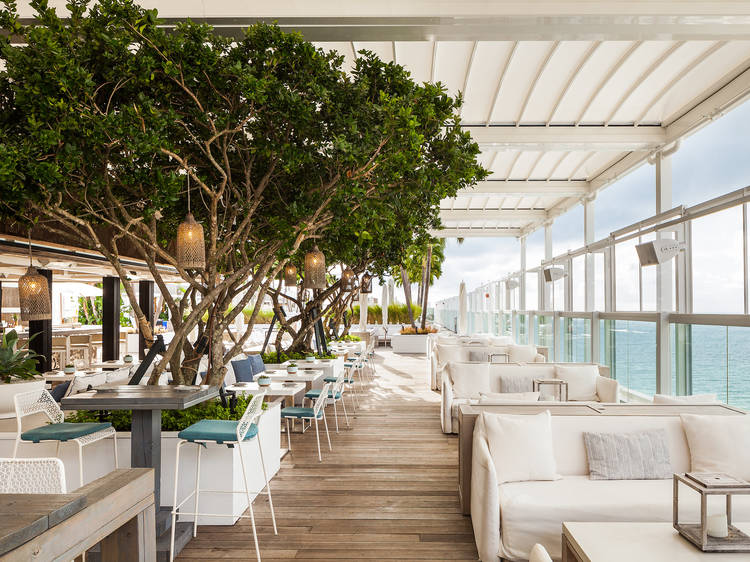
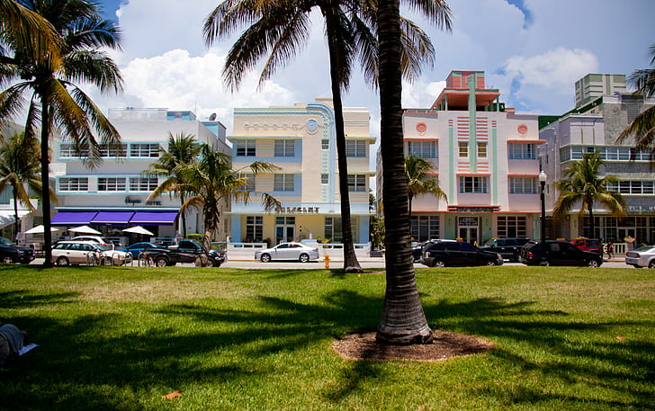
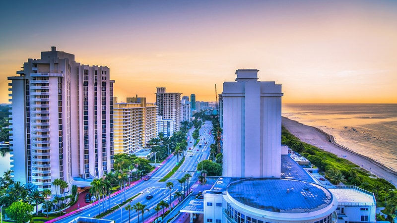

Des plages incroyable
Miami est à bien des égards l’une des villes les plus attirante des États-Unis. Lieu de rendez-vous des culturistes, haut lieu de la vie nocturne et adresse cosmopolite, Miami est une de ces villes aux multiples visages qui possèdent tout ce qu’il faut pour plaire à tout le monde. Elle se distingue de plages notamment qui est une municipalité distincte de la ville.

Cette île à beaucoup de plages populaires. Elle dispose de nombreux restaurants en bord de mer, des boutiques, des hôtels, et de nombreuses possibilités pour bronzer.
Activité en plein air
Toujours Miami Beach, nous avons le quartier Art Déco qui rappelle des souvenirs d’une époque révolue en Floride avec bâtiments Art Déco de 1930 magnifiquement restaurés. Ces murs historiques aux couleurs pastel s’habille de néons lumineux qui sans conteste, font leurs effet une fois la nuit tombée. Passer par là c’est donc découvrir New World Center ( haut lieu des concerts à Miami ).

Et situé à l’extrémité sud de Miami Beach, juste à côté d’Art Déco où les batiments arty bordent le littoral et côtoient le "Vice". South Beach est un lieu de prédilection des icônes du grand écran ou de la scène qui vivent là bas.
Culture et histoire
La ville Viz-caya est très touristique mais mérite néanmoins une visite. Perchée directement sur la baie de Bis-iayne, sur le côté sud de Miami, la demeure décousue de style italien vous plonge à une époque où Miami était habillée d’arbres, loin de son costume de trafic routier d’aujourd’hui. Visiter Miami, c’est aussi goûter à la saveur de Cuba.
Little Havana, c’est le quartier qui fait la fierté des cubains de passage et pour cause, la non moins célèbre Calle Ocho et et les alentours témoignent du rêve américain. Ici, vous trouverez de nombreux restaurants et magasins, répliques de leurs ancêtres. Les maisons de style méditerranéen et leurs chaises à bascule sous le porche. La musique latine de tout les magasins de disque proposent vers Cuba, comme si vous y étiez.

Divertissement et détente
Visiter Miami les pieds dans l’eau ça vous dit ? Cette grande piscine extérieure est peut-être la plus belle au monde dans son genre. La Venetian Pool de Miami est une piscine municipale largement inspirée des styles marocain et italien. On ne peut nier le charme de l’endroit et y passer un après-midi pour se baigner et y boire un verre est parfait !

Que faire à Miami si ce n’est assister à un match de basket ball entre les murs de la célèbre American Airlines Arena ? Les Miami offrent un véritable spectacle tant pour les amateurs que pour les avisés. Pour en profiter, il vous faudra venir visiter Miami entre fin octobre et début Avril: pendant la saison, plus de 41 matchs se parent à domicile alors, profitez-en !